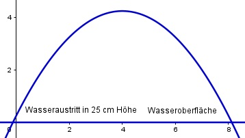

Aufgabe 137 Aus einem Springbrunnen tritt das Wasser in 25 cm Höhe auf einer parabelförmigen Bahn mit der Funktionsgleichung y = -0,25x2 + 2x + 0,25 aus. In welcher Entfernung zu den Düsen treffen die Wasserstrahlen auf?

Es sind die Nullstellen (y = 0) zu berechnen: 0 = -0,25x2 + 2x + 0,25 |*(-4) 0 = x2 - 8x - 1 p, q - Formel: p = -8, q = -1 x1,2 = x1,2 = 4 ± x1,2 = 4 ± x1,2 = 4 ± 4,1 x1 = 4 + 4,1 = 8,1 m In dieser Entfernung trifft der Strahl die Wasseroberfläche. x2 = 4 - 4,1 = -0,1 m keine Lösung, liegt im Düsenkörper.